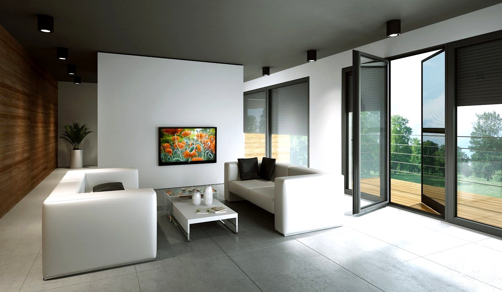
Aluminiowe profile wypełnione pianką pomagają ograniczyć straty ciepła, chronią przed nadmiernym nasłonecznieniem i zapewniają mieszkańcom większy komfort na co dzień.
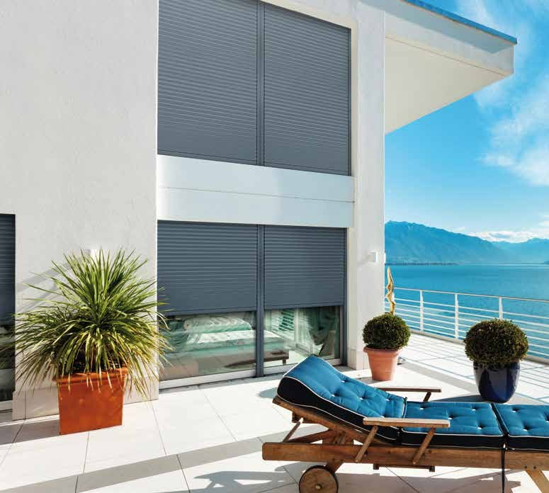
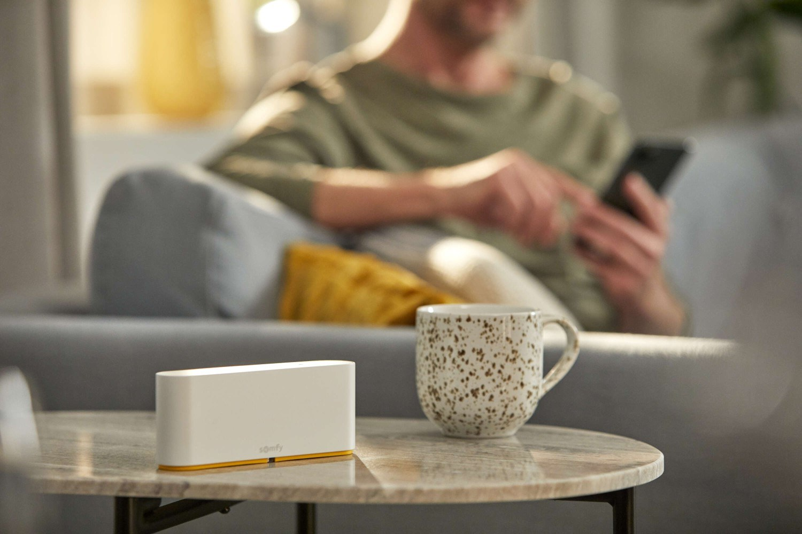
Mniej nagrzewania w upały i mniejsze straty ciepła zimą
Dodatkowa osłona okien przed wzrokiem i włamaniem
Ręcznie, przyciskiem, pilotem lub z aplikacji
Pancerz z profili aluminiowych zwija się w skrzynce nad oknem i zjeżdża w prowadnicach. Opuszczona roleta zaciemnia wnętrze, chroni przed nagrzewaniem latem, ogranicza straty ciepła zimą i utrudnia włamanie. Sterujesz nią ręcznie, przyciskiem, pilotem albo z telefonu.
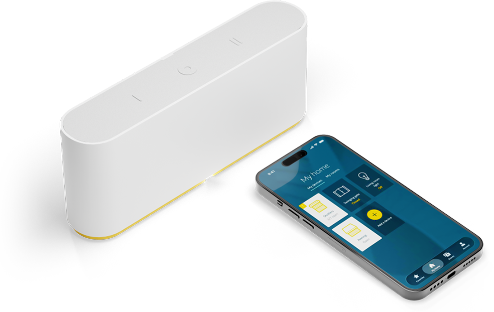
TaHoma® switch to centrala Somfy, która łączy rolety z innymi urządzeniami w domu. Sterujesz nimi z aplikacji w telefonie, a zaprogramowane scenariusze same podnoszą i opuszczają rolety o odpowiedniej porze — także wtedy, gdy nie ma Cię w domu.
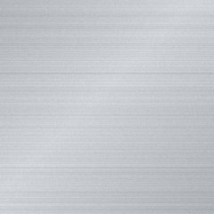
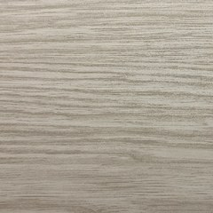
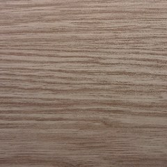
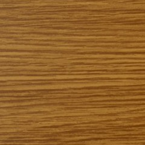
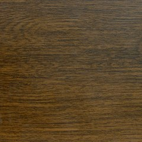
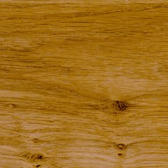
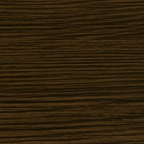
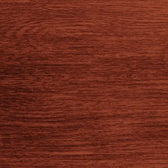
Dostępne są również inne, niestandardowe kolory — zapytaj nas o szczegóły.
Tak, rolety zewnętrzne można zamontować również w istniejących budynkach. W takim przypadku najczęściej wybierane są rolety adaptacyjne, które nie wymagają ingerencji w konstrukcję ścian i można je dopasować do elewacji.
Na etapie budowy najlepsze są rolety podtynkowe (niewidoczne skrzynki). W budynku wykończonym jedyną nieinwazyjną opcją są adaptacyjne — montowane na elewacji lub we wnęce.
Montaż rolet podtynkowych najlepiej uwzględnić już na etapie projektowania budynku. Pozwala to odpowiednio przygotować otwory okienne i zaplanować ocieplenie elewacji, aby estetycznie ukryć skrzynki rolet.
Nie zawsze. Rolety zewnętrzne mogą być obsługiwane ręcznie (za pomocą linki) lub elektrycznie. Tylko w przypadku sterowania elektrycznego konieczne jest zasilanie.
Tak, rolety zewnętrzne skutecznie ograniczają nagrzewanie pomieszczeń latem, ponieważ zatrzymują część promieni słonecznych przed szybą. Dzięki temu we wnętrzach można utrzymać przyjemniejszą temperaturę nawet podczas upałów.
Tak, rolety zewnętrzne tworzą dodatkową warstwę izolacyjną, która pomaga ograniczyć straty ciepła zimą. Dzięki temu mogą poprawić komfort termiczny pomieszczeń i wspierać oszczędność energii.
Tak — moskitierę rolowaną można prowadzić w tych samych, łączonych prowadnicach co roletę. Nie zabiera światła, a gdy nie jest potrzebna, po prostu się ją zwija.
Skontaktuj się z nami — doradzimy technicznie i przygotujemy kalkulację cenową.